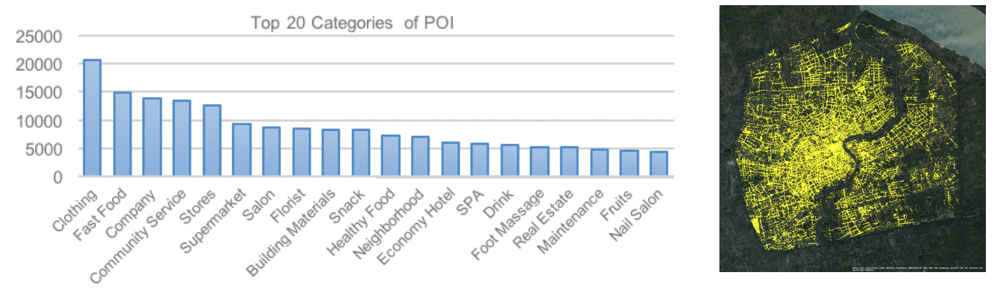
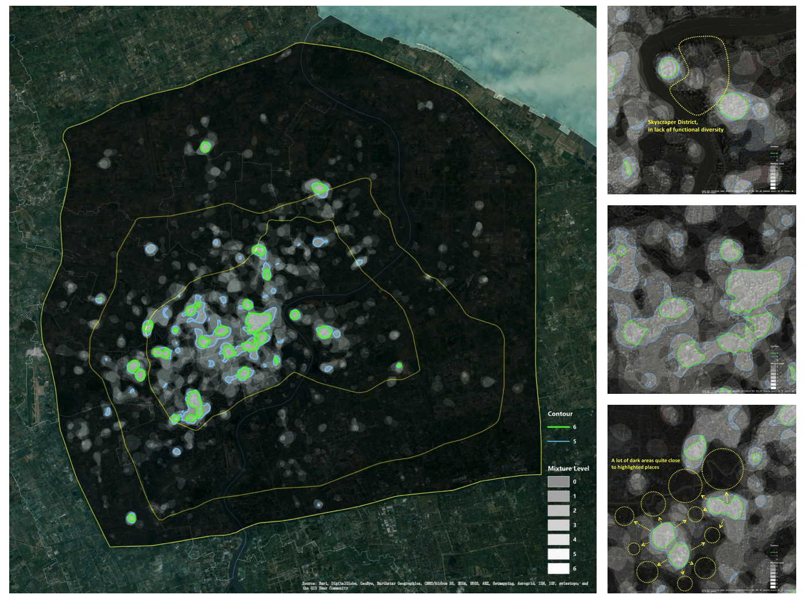
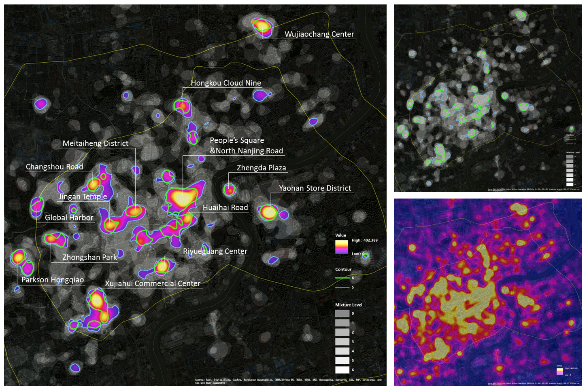
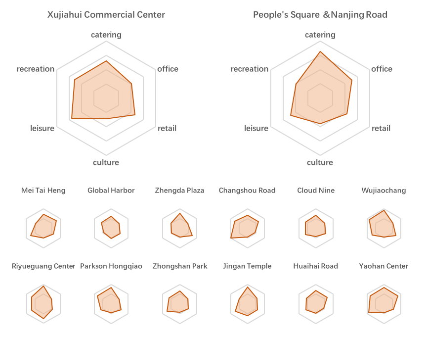
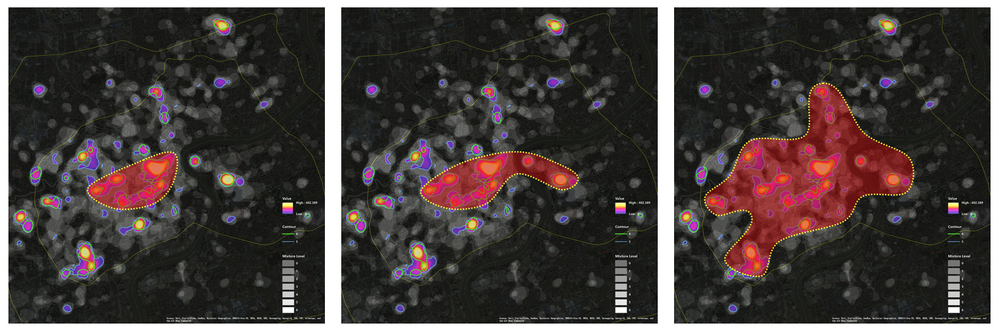

![]()
Utilizing the concept of entropy, the project aims to quantify the level of functional diversity within different areas of the city. By leveraging a dataset consisting of 300,000 points of interest (POI) from Dianping and office and residential POI data from Anjuke, the project assigns weights to these locations based on their respective scores. These scores indicate the areas with the highest spatial composition within the city. Typically, these dynamic places are considered the most vibrant and active within the urban landscape, reflecting a high degree of functional compounding.
The Idea
Utilizing the concept of entropy, the project aims to quantify the level of functional diversity within different areas of the city. By leveraging a dataset consisting of 300,000 points of interest (POI) from Dianping and office and residential POI data from Anjuke, the project assigns weights to these locations based on their respective scores. These scores indicate the areas with the highest spatial composition within the city. Typically, these dynamic places are considered the most vibrant and active within the urban landscape, reflecting a high degree of functional compounding.

Dataset
I utilize a diverse dataset to analyze and identify the Central Activities Zone (CAZ) in Shanghai. This dataset primarily comprises Points of Interest (POI), which include various urban elements like retail outlets, catering services, office spaces, leisure, cultural, and recreational facilities. These POIs are crucial in determining the functional mixture of different urban areas, which in turn helps in recognizing and delineating the CAZ. The dataset’s depth and variety allow for a comprehensive analysis of urban dynamics and the multifunctional nature of Shanghai’s central areas. Updated to August in 2016, this project has captured a total number of 386,628 POI records within the outer ring of downtown Shanghai.

Method
The research method for recognizing Central Activities Zones (CAZ) in Shanghai based on evaluated POI data involves several steps:
Dataset Preparation: Utilizes a dataset of Points of Interest (POI) in Shanghai. The data includes various attributes like shop ID, score, category, and average price.
Category Reclassification: Involves regrouping the vast number of POI categories into six general categories: retail, catering, office, recreation, leisure, and culture. This reclassification considers the diversity inherent in CAZs.
Calibration of Mixture: This step focuses on measuring the degree of functional mixture within areas, which is a key characteristic of CAZs. It involves two dimensions: volume and diversity. The process includes:
Value Aggregation Map: Normalizing and aggregating heat maps for each category to represent the intensity of functions. Function Intersection Map: Identifying areas with diverse functions by overlaying processed heat maps and classifying places based on the number of overlapping functions. The research aims to identify dynamic and functionally diverse areas in Shanghai that could be recognized as CAZs.
 Value aggregation map of Shanghai (left), the magnified core area (top right)
Value aggregation map of Shanghai (left), the magnified core area (top right)
 Function intersection map of Shanghai (left), and magnified three places: Lujiazui (top), Nanjing Road (middle), Zhongshan Park (bottom)
 The heat map of compiled functions (left) and the contour map of mixture degree (right) and the top 14 mixed-use districts within middle ring of Shanghai
Finding the most dynamic areas
The study identifies the most dynamic areas in Shanghai based on the aggregation and intersection maps created from evaluated POI data. These maps enabled the researchers to determine places with large overall value and multiple functions.

As for the original target of this project, we demonstrate three possible scenarios for defining the CAZ boundary in Shanghai.
